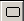
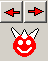
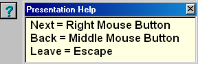
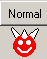
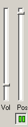
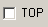

july, 2005
Presentation mode
Enter Presentation mode
|
 |
By clicking on this button, the active document will be shown in full screen mode, without editing facilities. |
When a MP3-file is playing, starting the presentation will pause the music.
At the moment the following documents are supported in full-screen mode
RTF,RVF,TXT,AVI,MPEG,HTML,...
Not supported are OLE, MP3, Email
Logo on top
If the file "PuntHoofd_presentation_logo.rvf" exists in the same directory path as the current inifile, the contents of this file is placed as a transparent window on top of the presentation. This file can contain any valid rvf attributes. The window can be placed on any place of the screen, simply by dragging. The window is also scallable. Position and size are saved on closing of PuntHoofd. Right Mouse on the window clicking let you set the transparency. If the mouse is moved into the window, the transparency is temporary set to a very low value.
Presentation controls
|
 |
Click on Left-Arrow = Middle Mouse Button = go to previous page
Click on Right Arrow = Right Mouse Button = go to next page
Click on PuntHoofd = Escape = go to normal mode |
with F1 or help Button, the visibilty of the help window is toggeld:

|
 |
When clicking on a jump/link in a page, the viewer will jump to the link (either local or real URL), but the arrow buttons are masked by the normal button. By pressing on the normal button, the program goes back to the normal presentation. |
|
 |
When the current page is a movie, 2 trackbars and a play-pauze button are shown.
Vol = Volume (left and right volume are moved together)
Pos = Position in the movie |
|
 not implemented yet |
When is checkbox is checked, the first time after launching PuntHoofd, all pages will start at the top (or movies at the beginning). After a page is scrolled, it will remember it's position during the complete session of PuntHoofd. |